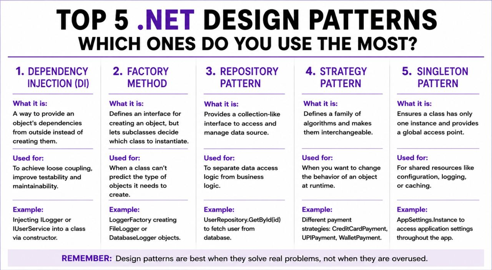
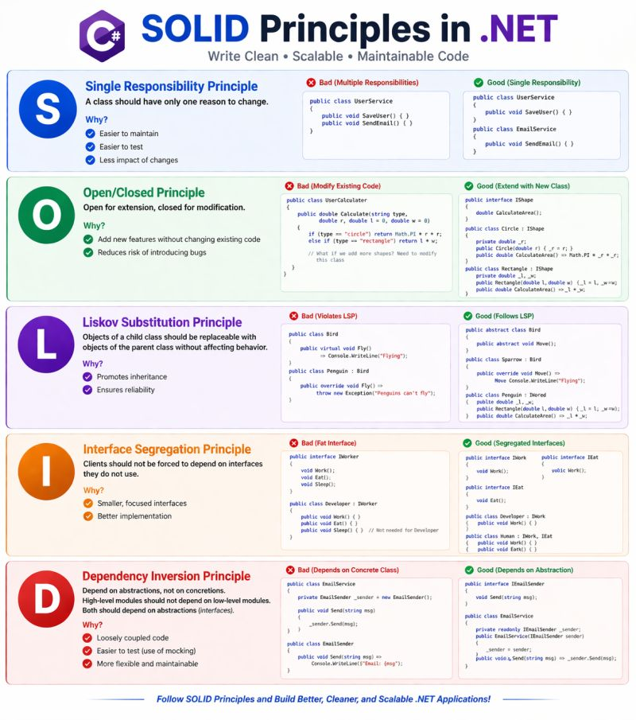

# C# OOP Learning Roadmap for Interview Preparation
Goal
This roadmap is focused only on object-oriented programming concepts in C#. Use it separately from the main C# fundamentals roadmap.
Topic Index
- 1. OOP Basics
- 2. Constructors
- 3. Encapsulation
- 4. Abstraction
- 5. Inheritance
- 6. Polymorphism
- 7. Interfaces
- 8. Abstract Classes vs Interfaces
- 9. Association, Aggregation, and Composition
- 10. Static Members in OOP
1. OOP Basics
What to Learn
- What is object-oriented programming?
- Class
- Object
- State and behavior
- Fields
- Methods
- Properties
- Auto-implemented properties
- Object initialization
- Access modifiers
publicprivateprotectedinternalprotected internalprivate protected- Abstract class
- Private class
- Static class
- Sealed class
Class Type Comparison
| Feature | Abstract Class | Private Class | Static Class | Sealed Class |
|---|---|---|---|---|
| Instantiation | Cannot instantiate directly | Only inside outer class | Cannot instantiate | Can be instantiated |
| Inheritance | Can be inherited | Only within outer class | Cannot be inherited | Cannot be inherited |
| Object creation | Not allowed directly | Allowed inside outer class | Not allowed | Allowed |
| Methods support | Abstract and normal methods | All method types | Only static methods | All method types |
| Fields support | Instance and static fields | All fields | Only static fields | All fields |
| Constructor support | Yes | Yes | Only static constructor | Yes |
| Access modifier / keyword | `abstract` | `private` | `static` | `sealed` |
| Main purpose | Base blueprint for child classes | Restrict class visibility | Utility/helper methods | Prevent inheritance |
| Can contain abstract method | Yes | No | No | No |
| Example | `abstract class Shape` | `private class Helper` | `static class MathHelper` | `sealed class Employee` |
Common Use Cases
| Type | Use Case |
|---|---|
| Abstract class | Base class for shared and abstract logic |
| Private class | Helper class hidden inside another class; helps encapsulation |
| Static class | Utility/helper functions and constants |
| Sealed class | Final class where further inheritance should be prevented |
2. Constructors
What to Learn
- Default constructor
- Parameterized constructor
- Static constructor
- Private constructor
- Constructor overloading
- Constructor chaining
thiskeywordbasekeyword- Copy constructor concept
Constructor Type Comparison
| Feature | Private Constructor | Static Constructor | Copy Constructor |
|---|---|---|---|
| Purpose | Restricts object creation from outside class | Initializes static members | Creates object by copying another object |
| Access modifier | `private` | No access modifier allowed | Usually `public` |
| Parameters | Can have parameters | Cannot have parameters | Takes same class object as parameter |
| Object creation outside class | Not allowed | Cannot create object | Allowed |
| Called by | Inside same class only | Automatically by CLR | Explicitly by programmer |
| Invocation | Manual | Automatic | Manual |
| Runs how many times | Every object creation inside class | Only once per application lifetime | Every time constructor is called |
| Used in | Singleton pattern | Static initialization | Object cloning/copying |
| Supports instance members | Yes | No, only static members | Yes |
| Inheritance | Class cannot be inherited externally if only private constructor exists | Static class cannot inherit | Normal inheritance rules |
| Example | `private Employee()` | `static Employee()` | `public Employee(Employee emp)` |
Constructor Overloading
Constructor overloading means defining multiple constructors in the same class with different sets of parameters.
public class Employee
{
public Employee()
{
}
public Employee(string name)
{
Name = name;
}
public string Name { get; set; }
}3. Encapsulation
What to Learn
- Data hiding
- Private fields
- Public properties
- Getter and setter
- Read-only properties
- Init-only properties
- Validation inside properties
- Benefits of encapsulation
Encapsulation is about binding data and methods into a single unit, usually a class.
- Data is important in encapsulation because encapsulation protects internal state.
- Internal state is usually stored in fields or properties.
- Access modifiers such as
private,public, andprotectedcontrol access. - Encapsulation helps maintain data integrity.
- A common pattern is to keep fields private and expose controlled access through properties or methods.
public class BankAccount
{
private decimal _balance;
public decimal Balance => _balance;
public void Deposit(decimal amount)
{
if (amount <= 0)
{
throw new ArgumentException("Amount must be positive.");
}
_balance += amount;
}
}4. Abstraction

What to Learn
- What is abstraction?
- Hiding implementation details
- Abstract classes
- Abstract methods
- Abstract properties
- Interfaces
- Real-world abstraction examples
Abstraction focuses on what a class or object should do, not how it does it.
- Data is not mandatory for abstraction.
- Abstraction can define only behavior, such as methods in an interface or abstract class.
- Abstract classes and interfaces are common ways to implement abstraction.
- Abstraction hides complexity from the user.
- Abstract class is one of the ways to implement abstraction.
- Abstract classes and interfaces act as base types; direct object creation is not possible.
- An abstract class cannot be sealed or static.
- An abstract class does not support multiple class inheritance.
public abstract class Shape
{
public abstract double GetArea();
}5. Inheritance
What to Learn
- Base class
- Derived class
- Single inheritance
- Multilevel inheritance
- Interface-based multiple inheritance
basekeywordprotectedmembers- Constructor execution order in inheritance
sealedclasssealedmethod
Inheritance allows a derived class to reuse and extend members from a base class.
- C# supports single class inheritance.
- C# does not support multiple class inheritance.
- Multiple inheritance-like behavior is achieved through interfaces.
- A sealed class prevents further inheritance.
- A sealed method prevents overriding further in derived classes.
6. Polymorphism
What to Learn
- Compile-time polymorphism
- Runtime polymorphism
- Method overloading
- Method overriding
- Operator overloading basics
virtualkeywordoverridekeywordnewkeyword for method hiding- Dynamic method dispatch
- Early binding
- Late binding
Polymorphism is the ability of a variable, object, or function to take multiple forms.
Compile-Time vs Runtime Polymorphism
| Feature | Compile-Time Polymorphism | Runtime Polymorphism |
|---|---|---|
| Achieved by | Method overloading | Method overriding |
| Definition | Multiple methods with same name in same class | Same method name in parent and child classes |
| Inheritance required | No | Yes |
| Method signature | Different | Same |
| Parameters | Number, type, or order should differ | Must be same |
| Keywords used | No special keyword | `virtual` and `override` |
| Binding time | Compile time / early binding | Runtime / late binding |
| Purpose | Increase method flexibility | Modify inherited method behavior |
| Parent class method | Not required | Required |
| Child class method | Not required | Required |
| Overriding optional | Not applicable | Yes |
| Example | `Add(int)` and `Add(int, int)` | `Display()` in parent and child |
Method Hiding
Method hiding means hiding the implementation of a base class method in a derived class using the new keyword.
- The derived class provides a new implementation.
- The base method is still accessible through a base class reference.
- Method hiding is different from overriding.
public class BaseClass
{
public void Display()
{
Console.WriteLine("Base display");
}
}
public class ChildClass : BaseClass
{
public new void Display()
{
Console.WriteLine("Child display");
}
}Early Binding vs Late Binding
| Feature | Early Binding | Late Binding |
|---|---|---|
| Binding time | Compile time | Runtime |
| Performance | Faster | Slower |
| Type checking | Compile-time checking | Runtime checking |
| IntelliSense support | Yes | Limited or no |
| Error detection | Compile time | Runtime |
| Example | Normal object call | Reflection / `dynamic` |
dynamic obj = new Customer();7. Interfaces
What to Learn
- Interface declaration
- Interface implementation
- Multiple interface implementation
- Explicit interface implementation
- Interface properties
- Interface methods
- Default interface methods
- Interface segregation principle
- Interface naming convention
Interfaces define a contract for classes.
Benefits of Interfaces
- Help define the contract of the system.
- Make unit testing easier.
- Support dependency injection.
- Help reduce tight coupling.
- Support multiple interface inheritance.
From C# 8.0, interfaces can contain default method implementations.
public interface ILogger
{
void Log(string message);
}8. Abstract Classes vs Interfaces

What to Learn
- Abstract class use cases
- Interface use cases
- Shared behavior using abstract classes
- Contracts using interfaces
- Abstract members
- Virtual members
- When to choose abstract class
- When to choose interface
| Feature | Abstract Class | Interface |
|---|---|---|
| Definition | Contains declaration and implementation of methods | Mostly contains declarations; C# 8.0+ allows default implementations |
| Keyword used | `abstract` | `interface` |
| Multiple inheritance | Does not support multiple class inheritance | Supports multiple interface inheritance |
| Constructors | Can have constructors | Cannot have constructors |
| Fields support | Can have fields | Cannot have instance fields |
| Access modifiers | Supports access modifiers | Members are public by default in older interface style |
| Method types | Abstract and normal methods | Abstract methods and default methods from C# 8.0 |
| Object creation | Cannot instantiate directly | Cannot instantiate directly |
| Static members | Supported | Supported in modern C# |
| Purpose | Common base class with shared code | Contract for classes |
| Inheritance keyword | `:` | `:` |
| Example | `abstract class Shape` | `interface IShape` |
9. Association, Aggregation, and Composition
What to Learn
- Association
- Aggregation
- Composition
- Has-a relationship
- Uses-a relationship
- Object lifetime ownership
- Real-world examples
Association, aggregation, and composition describe relationships between objects.
- Association means one object uses or communicates with another object.
- Aggregation is a weak has-a relationship where the child can exist independently.
- Composition is a strong has-a relationship where the child object lifetime depends on the parent.
10. Static Members in OOP
What to Learn
- Static fields
- Static methods
- Static properties
- Static classes
- Static constructors
- Shared state
- Utility classes
- Limitations of static classes
Static members belong to the type itself, not to an object instance.
- Static classes are useful for utility/helper methods and constants.
- Static classes cannot be instantiated.
- Static classes cannot be inherited.
- Static classes can contain only static members.
- Static constructors initialize static members and run only once per application lifetime.